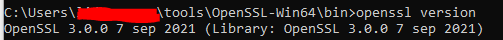

I have a question about how and what is the version of OpenSSl that I must install in Windows to later create certificates. Install a one version (openssl-1.0.2d-fips-2.0.10) found in SourceForge but it does not generate the files correctly. There is also the official website https://www.openssl.org, but I do not know how to install it and how, so that when it comes to generating the keys and .pem file, it works. Generate some environment variables that point to the folder where I unzipped the downloaded, I do not know if it is the correct way.
| What does "but it does not generate the files correctly" mean? Which files? I don't think that the official site exposes the (Win) binaries. There's always the possibility of building it from source :d. I remember that I was able to install and use a downloaded binary on my previous laptop. Now I use a custom version (OpenSSL 1.0.2j-fips 26 Sep 2016) that I built myself. - CristiFati 31 May 2018 at 13:33 | |
| 5 | wiki.openssl.org/index.php/Binaries - CristiFati 31 May 2018 at 13:45 |
| 1 | Whichever suits you best. If it makes no difference to you, then start with the 1st. - CristiFati 31 May 2018 at 13:51 |
| 1 | As I told you before, I am a Nobel student so, in my opinion, it counts little, what my computer needs is more important. The question is what is the most appropriate option to work in localhost environment, node.js? - gemita 31 May 2018 at 14:13 |
I also wanted to create OPEN SSL for Windows 10. An easy way to do it without running into a risk of installing unknown software from 3rd party websites and risking entries of viruses, is by using the openssl.exe that comes inside your Git for Windows installation. In my case, I found the open SSL in the following location of Git for Windows Installation.
C:\Program Files\Git\usr\bin\openssl.exe
If you also want instructions on how to use OPENSSL to generate and use Certificates, here is a write-up on my blog. The step by step instructions first explains how to use Microsoft Windows Default Tool and also OPEN SSL and explains the difference between them.
https://kaushikghosh12.blogspot.com/2016/08/self-signed-certificates-with-microsoft.html
| 72 | Easy way and fastest if you already have Git. +1 for that.A shortcut would be to directly type your openssl commands inside the Git bash like this openssl req -newkey rsa:2048 -nodes -keyout key.pem -x509 -days 365 -out certificate.pem - Olfredos6 21 Dec 2018 at 13:59 |
| 20 | For some commands, you may need to specify the config location with the -config flag. Mine was at C:\Program Files\Git\usr\ssl\openssl.cnf - Millie Smith 18 Jul 2019 at 22:55 |
| 22 | if you have Git for Windows, type bash in terminal then you can use openssl command vola - Ali Karaca 4 Feb 2020 at 09:44 |
| Every time I try the git openssl in git in Windows, it does not complete any output and does not display anything or quit. I am trying to figure That out now... - gridtrak 17 Sep 2020 at 13:13 | |
| 4 | type Git in Windows Search bar and you get all the related listing. Then click on Git Bash, then you are in bash shell. - Kartik Javali 3 Mar 2021 at 16:43 |
This command hung for 30 minutes, not finishing but just generated a 0KB file: openssl genrsa -des3 -out rootCA.key 2048 So I had to use slproweb.com/products/Win32OpenSSL.html - Jeb50 1 Jul 2021 at 04:53 |
|
| 1 | Great answer, Kaushik. Thanks. For folks who may want to find where you may have openssl.exe existing, I'll share that you could use the DOS command where /r \ openssl.exe, or good ol' cd ` and dir /s openssl.exe`. I'm not saying they will be fast, but they'll do the job. - charlie arehart 22 Apr 2022 at 23:10 |
FWIW, as a slight variant on Kaushik's great answer here, I just offered in another answer a different way to leverage something ELSE that folks might "already have installed", if you have implemented WSL (Windows Subsystem for Linux). In that case, you can use wsl openssl ...whatever.... But I wanted to share a bit more than that alone, thus the other answer. - charlie arehart 22 Apr 2022 at 23:12 |
|
| This doesn't really answer the question directly. He asked how to install it, not run it. I needed to install it to build something else I pulled from GitHub, so this answer was no help. The answer below, using chocolatey, is the way to go - ajpieri 28 Nov 2022 at 02:46 | |
| Git version 2.31.1 for Windows very likely uses OpenSSL version 1.1.1. Other providers can offer more recent versions. For example, I've found version 3.0.8 from FireDiemon (kb.firedaemon.com/support/solutions/articles/4000121705). - Nikolai Varankine 15 Feb 2023 at 21:45 |
If you have chocolatey installed you can install openssl via a single command i.e.
choco install openssl
| 6 | I did the same but with Elevated permission that means opening CMD command line using Administrator mode in Windows. - pauldx 19 May 2021 at 17:41 |
In case you have Git installed,
you can open the Git Bash (shift pressed + right click in the folder -> Git Bash Here) and use openssl command right in the Bash
Or just run Git Bash from the Start menu if you don't have the shell extension installed. - Hugh W 7 Jun 2023 at 10:35 |
Do you have Git installed?
You can access openssl command from Git Bash without adding any environment variable.
But, if you want to access the openssl command from Windows cmd, then follow me:
C:\Program Files\Git\usr\bin\
Then add the path your environment variable (User variables -> Path):
Now write:
openssl
Either set the openssl present in Git as your default openssl and include that into your path in environmental variables (quick way)
OR
| By far the best answer that helped me - Bellash 18 Mar 2023 at 12:24 |
Necroposting, but might be useful for others:
There's always the official page ([OpenSSL.Wiki]: Binaries) which contains useful URLs (pointing to unofficial resources / builds, make sure to read the Important Disclaimer)
There are other repositories which contain unofficial builds
Here I want to mention: [GitHub]: CristiFati/Prebuilt-Binaries - Prebuilt-Binaries/OpenSSL
FIPS considerations:
v1.0.2u (FIPS capable) is built with OpenSSL-FIPS 2.0.16
v3.* also include a FIPS provider (check instructions on how to enable it - e.g. for Nix: [SO]: OpenSSL 3.0.8: FIPS functionality not working with libcrypto library in custom path)
Artefacts are .zips that should (typically) be unpacked in:
Win: C:\Program Files (C:\Program Files (x86))
Nix: /usr/local
Please take a look at the Readme.md file (and also at the one at the repository root)
Other (3rd-party) software may bundle OpenSSL, so it gets "installed" as a side effect. Such software (mentioned by other answers): Conan, Cygwin, Git, MSYS2, VCPkg, WSL (well, this is not actually Win)
And of course, you can build it yourself from sources, but that requires a little bit deeper knowledge ([GitHub]: openssl/openssl - (master) openssl/NOTES-WINDOWS.md)
Note: when having a functional OpenSSL instance (using whatever method above), here's how you can use it (if you need it into your own projects) from VStudio: [SO]: How to include OpenSSL in Visual Studio (@CristiFati's answer).
| There is nothing "official" about your first link but compiling the list together. All downloads listed there are 3rd party compilations of OpenSSL and thus are not official. The site even states it itself: "Use these OpenSSL derived products at your own risk; these products have not been evaluated or tested by the OpenSSL project." - sigy 6 May 2022 at 13:16 | |
| 1 | @sigy: The page is official as it's written by the OpenSSL team (and that's what my statement is). Whether it contains pointers to unofficial builds / pages it's a different matter. But, yeah, I should add a note there. - CristiFati 6 May 2022 at 13:23 |
I recently needed to document how to get a version of it installed, so I've copied my steps here, as the other answers were using different sources from what I recommend, which is Cygwin. I like Cygwin because it is well maintained and provides a wealth of other utilities for Windows. Cygwin also allows you to easily update the versions as needed when vulnerabilities are fixed. Please update your version of OpenSSL often!
Open a Windows Command prompt and check to see if you have OpenSSL installed by entering: openssl version
If you get an error message that the command is NOT recognized, then install OpenSSL by referring to Cygwin following the summary steps below:
Basically, download and run the Cygwin Windows Setup App to install and to update as needed the OpenSSL application:
C:\Program Files\mosquitto>openssl versionOpenSSL 1.1.1f 31 Mar 2020
If you are running Windows 10 1709 (build 16299) or later versions, you can use winget command below to install OpenSSL
winget install -e --id ShiningLight.OpenSSL
Or if you have Git for Windows installed on your system, you can also find OpenSSL in Git file directory.
C:\Program Files\Git\usr\bin\openssl.exe
For more details, check this guide 3 Methods on How to Install OpenSSL on Windows.
Here's a solution that may delight those who have implemented WSL (Windows Subsystem for Linux). You can just use:
wsl openssl ...whatever_args...
The point is that many who've implemented WSL may not realize they can call upon ANY linux command (within their underlying WSL linux vm) right from the DOS or powershell command-line this way. (It's easy to fall into thinking the point of WSL is to use it to "shell into the vm", which is indeed an option, but the power to just run linux commands from Windows is a real value-add of WSL.)
And to be clear, in doing the command as above, whatever file names or folders you may point to (or create) will be relative to the Windows folder from which you run the command. So doing for example, openssl req to create a self-signed cert, where you may name -keyout selfsigned.key -out selfsigned.crt, those two files will be created in the Windows folder where you ran the command.
That said, there are ways this could fall down for some openssl command examples one may find, such as if they tried to use various bash-specific arguments, in which case "shelling into wsl" to run the command may well be the better choice. You could still direct things to be found or placed on the host, but I don't mean this answer to become overly-focused on such WSL aspects. I just wanted to propose it as another alternative to installing openssl.
I'll add one additional tip: if you may want to use localhost in an openssl command (such as to obtain certs implemented on the host machine), note that localhost "within the vm" (as reached via that wsl openssl command) won't resolve to the host. To get the IP address of the host, you could use wsl ip route, then use THAT ip in place of localhost. - charlie arehart 22 Apr 2022 at 23:29 |
|
| God only knows why this was marked down. I didn't know you could do this. - Richard 9 May 2022 at 23:18 | |
| Thanks, Richard. Well, some folks don't care for WSL. Or maybe they didn't like the one negative I noted. Either way, it would be nice if they would step to let us know. In the meantime, you could add a vote up if you like it. So far, theirs is the only vote at all (as the activity history shows). FWIW, I stand by what I shared, however the votes may add up. :-) - charlie arehart 11 May 2022 at 01:48 | |
| WSL is the best thing Microsoft have done for 20 years. Windows with WSL is something special. - Richard 12 May 2022 at 23:01 |
I installed openssl 3.0.0 from https://slproweb.com/products/Win32OpenSSL.html. then I go to windows start ->openssl->Win64 OpenSSL Command Prompt, it opens a window like regular dos window, all I need is to go to the installation folder of openssl. 
| 1 | Thank you!!! ....This is a terrible answer for people who don't have git installed, but it really helped me. - Eliezer Berlin 27 Feb 2023 at 08:45 |
If you are working on Windows, simply install Git and add Git's bin folder to your system's path by using the following location: C:\Program Files\Git\usr\bin\
Then, just restart your terminal and try again.
| This does not answer the question in any way, shape, or form. - sloppypasta 11 Mar 2023 at 00:25 |
Check openssl tool which is a collection of Openssl from the LibreSSL project and Cygwin libraries (2.5 MB). NB! We're the packager.
One liner to create a self signed certificate:
openssl req -x509 -nodes -days 365 -newkey rsa:2048 -keyout selfsigned.key -out selfsigned.crt
Just install the latest version with a simple Installer Script :
if (!(Get-Command -Name Install-OpenSSL -Type ExternalScript -ErrorAction Ignore)) { Install-Script -Name Install-OpenSSL -Repository PSGallery -Scope CurrentUser }
Install-OpenSSL
The script is cross-platform and If you have git's openssl, it will add that to $Env:Path. ie: It won't install another one unless you -Force it to.
I hope this helps :)
you can get it from here https://slproweb.com/products/Win32OpenSSL.html
Supported and reqognized by https://wiki.openssl.org/index.php/Binaries
{kind=link}
{kind=link}
{kind=link}
{kind=link}
{kind=link}
{kind=link}